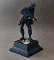
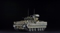
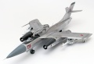

Приветствую! Представляю свой первый опыт работы над миниатюрой в 16-м масштабе. Фигурка в представлении не нуждается, по мне она шикарна, все детали чётко проработаны. Композиция представляет собой командира группы полицейского спецподразделения США под названием SWAT, который в очередной раз остановил один из бесконечных наркотрафиков где-то на территории штатов.

Здравия желаю коллеги! Закончил стройку БМП Bradley, а точнее ее разведывательную версию M3 в "слепом" от известного производителя. Биография данной машины довольно известна, по этому хочу осветить лтшь наиболее известные факты из истории названа в честь генерала Омара Брэдли, создана во второй половине 1970-х годов на базе прототипа XM723 с учётом опыта боевого применения советской БМП-1, конструктивных особенностей германской БМП Maрдер в качестве лучше защищённой и вооружённой альтернативы бронетранспортёрам M113.
Представляю вам модель в масштабе 1/48 от компании «Звезда» - Учебно-Боевого самолета ОКБ Яковлева Як-130. Модель выполнена в варианте ВВС Республики Беларусь - 116-й гвардейской Радомской Краснознаменной штурмовой авиабазы в городе Лиде, на момент эксплуатации осени 2018 года бортовой номер 74.

Як-28П является, пожалуй, одной из самых неоднозначных машин в составе ПВО СССР. Построенный в количестве 435 экземпляров он вплоть до конца эксплуатации так и не устроил ВВС и официально не принимался на вооружение. Самолет страдал набором характеристик негативно влиявших на его боевые и эксплуатационные свойства и, кроме впечатляющей скороподъемности, возможности барражирующего полета и несколько лучших возможностей по селекции и перехвату низколетящих целей, ЯК-28П не выделялся на фоне других машин ПВО СССР, особенно Су-15, которому он уступал почти во всем.